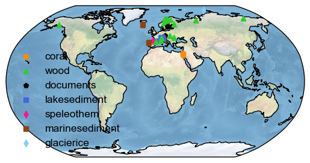
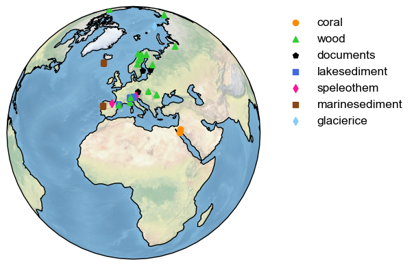
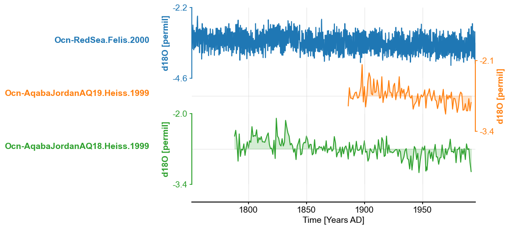
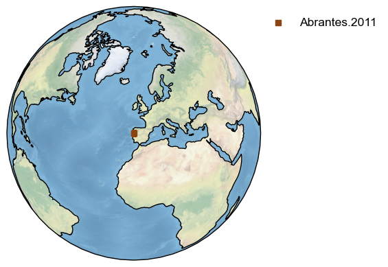
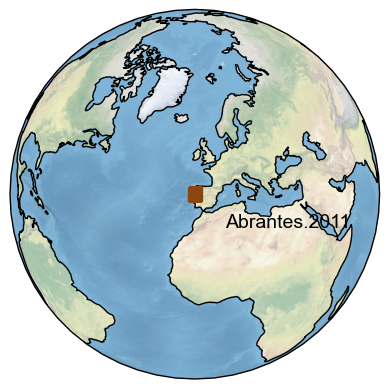
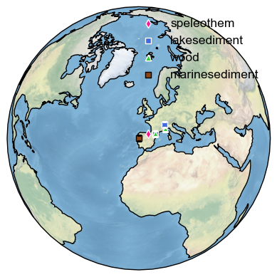
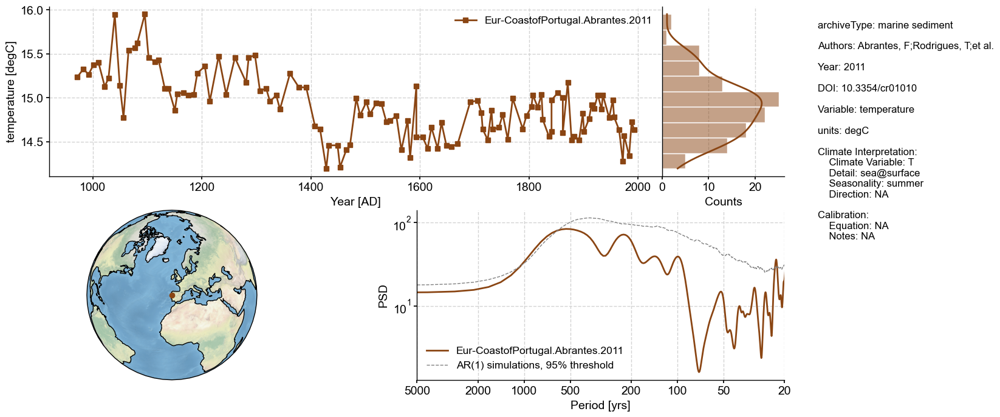
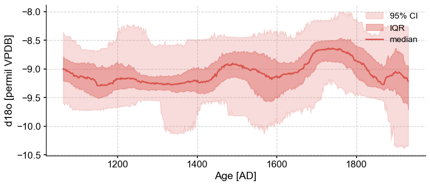

Working with LiPD files#
Preamble#
Goals#
Plot the location of multiple datasets
Plot the location of the nearest datasets to a record of interest
Create a LiPDSeries object from LiPD files
Create Dashboards
Reading time:
Keywords#
LiPD; Visualization
Pre-requisites#
None. This tutorial assumes basic knowledge of Python. If you are not familiar with this coding language, check out this tutorial.
Relevant Packages#
Matplotlib; Cartopy
Data Description#
This tutorial makes use of the following datasets, stored in the LiPD format:
Euro2k database: PAGES2k Consortium., Emile-Geay, J., McKay, N. et al. A global multiproxy database for temperature reconstructions of the Common Era. Sci Data 4, 170088 (2017). https://doi.org/10.1038/sdata.2017.88
Crystal cave record: McCabe-Glynn, S., Johnson, K., Strong, C. et al. Variable North Pacific influence on drought in southwestern North America since AD 854. Nature Geosci 6, 617–621 (2013). https://doi.org/10.1038/ngeo1862
Demonstration#
Let’s import the necessary packages:
import pyleoclim as pyleo
import matplotlib.pyplot as plt
import cartopy.crs as ccrs
Working with LiPD files#
The LiPD object can be used to load datasets stored in the LiPD format. In this first case study, we will load an entire library of LiPD files:
d_euro = pyleo.Lipd('../data/Euro2k')
Disclaimer: LiPD files may be updated and modified to adhere to standards
Found: 31 LiPD file(s)
reading: Ocn-RedSea.Felis.2000.lpd
reading: Arc-Forfjorddalen.McCarroll.2013.lpd
reading: Eur-Tallinn.Tarand.2001.lpd
reading: Eur-CentralEurope.Dobrovoln.2009.lpd
reading: Eur-EuropeanAlps.Bntgen.2011.lpd
reading: Eur-CentralandEasternPyrenees.Pla.2004.lpd
reading: Arc-Tjeggelvas.Bjorklund.2012.lpd
reading: Arc-Indigirka.Hughes.1999.lpd
reading: Eur-SpannagelCave.Mangini.2005.lpd
reading: Ocn-AqabaJordanAQ19.Heiss.1999.lpd
reading: Arc-Jamtland.Wilson.2016.lpd
reading: Eur-RAPiD-17-5P.Moffa-Sanchez.2014.lpd
reading: Eur-LakeSilvaplana.Trachsel.2010.lpd
reading: Eur-NorthernSpain.Martn-Chivelet.2011.lpd
reading: Eur-MaritimeFrenchAlps.Bntgen.2012.lpd
reading: Ocn-AqabaJordanAQ18.Heiss.1999.lpd
reading: Arc-Tornetrask.Melvin.2012.lpd
reading: Eur-EasternCarpathianMountains.Popa.2008.lpd
reading: Arc-PolarUrals.Wilson.2015.lpd
reading: Eur-LakeSilvaplana.Larocque-Tobler.2010.lpd
reading: Eur-CoastofPortugal.Abrantes.2011.lpd
reading: Eur-TatraMountains.Bntgen.2013.lpd
reading: Eur-SpanishPyrenees.Dorado-Linan.2012.lpd
reading: Eur-FinnishLakelands.Helama.2014.lpd
reading: Eur-Seebergsee.Larocque-Tobler.2012.lpd
reading: Eur-NorthernScandinavia.Esper.2012.lpd
reading: Arc-GulfofAlaska.Wilson.2014.lpd
reading: Arc-Kittelfjall.Bjorklund.2012.lpd
reading: Eur-Ltschental.Bntgen.2006.lpd
reading: Eur-Stockholm.Leijonhufvud.2009.lpd
reading: Arc-AkademiiNaukIceCap.Opel.2013.lpd
Finished read: 31 records
To obtain a map of all the dataset locations, arranged by the type of archive, you can use the mapAllArchive function:
d_euro.mapAllArchive()
(<Figure size 640x480 with 1 Axes>, <GeoAxes: >)

To change the projection to center around Europe and place the legend on the right side, one can write the following:
d_euro.mapAllArchive(projection='Orthographic',
proj_default={'central_longitude':10, 'central_latitude':30},
lgd_kwargs={'bbox_to_anchor':(1.05, 1)});

Note that the bbox_to_anchor property is from Matplotlib but can be passed to Pyleoclim to change the behavior of the legend.
You can also save the figure as such:
d_euro.mapAllArchive(projection='Orthographic',
proj_default={'central_longitude':10, 'central_latitude':30},
savefig_settings={'path':'map.png','format':'png'})
Figure saved at: "map.png"
(<Figure size 640x480 with 1 Axes>, <GeoAxes: >)
Extracting a LipdSeries#
Although working with LiPD objects can be useful for mapping, most of the granularity in routine paleoceanographic studies happens at the individual timeseries level. Next, we will discuss how to obtain a LipdSeries from a Lipd object in Pyleoclim.
There are several ways to obtain a LipdSeries from a Lipd object. Each method has its advantages and disadvantages. Let’s have a look at all of them.
Using Lipd.to_tso#
If nothing is known about the content of the file, it may be useful to use the Lipd.to_tso method to obtain a list of dictionary that can be iterated upon. Dictionaries are native to Python and can be easily explored as shown below. The first line of the code creates the list of dictionaries, and the for loop goes through the list, extracting relevant information from each dictionary that would allow us to identify the relevant dictionary for our work, and print it out per index:
ts_list = d_euro.to_tso()
for idx, item in enumerate(ts_list):
print(str(idx)+': '+item['dataSetName']+': '+item['paleoData_variableName'])
extracting paleoData...
extracting: Ocn-RedSea.Felis.2000
extracting: Arc-Forfjorddalen.McCarroll.2013
extracting: Eur-Tallinn.Tarand.2001
extracting: Eur-CentralEurope.Dobrovolný.2009
extracting: Eur-EuropeanAlps.Büntgen.2011
extracting: Eur-CentralandEasternPyrenees.Pla.2004
extracting: Arc-Tjeggelvas.Bjorklund.2012
extracting: Arc-Indigirka.Hughes.1999
extracting: Eur-SpannagelCave.Mangini.2005
extracting: Ocn-AqabaJordanAQ19.Heiss.1999
extracting: Arc-Jamtland.Wilson.2016
extracting: Eur-RAPiD-17-5P.Moffa-Sanchez.2014
extracting: Eur-LakeSilvaplana.Trachsel.2010
extracting: Eur-NorthernSpain.Martín-Chivelet.2011
extracting: Eur-MaritimeFrenchAlps.Büntgen.2012
extracting: Ocn-AqabaJordanAQ18.Heiss.1999
extracting: Arc-Tornetrask.Melvin.2012
extracting: Eur-EasternCarpathianMountains.Popa.2008
extracting: Arc-PolarUrals.Wilson.2015
extracting: Eur-LakeSilvaplana.Larocque-Tobler.2010
extracting: Eur-CoastofPortugal.Abrantes.2011
extracting: Eur-TatraMountains.Büntgen.2013
extracting: Eur-SpanishPyrenees.Dorado-Linan.2012
extracting: Eur-FinnishLakelands.Helama.2014
extracting: Eur-Seebergsee.Larocque-Tobler.2012
extracting: Eur-NorthernScandinavia.Esper.2012
extracting: Arc-GulfofAlaska.Wilson.2014
extracting: Arc-Kittelfjall.Bjorklund.2012
extracting: Eur-Lötschental.Büntgen.2006
extracting: Eur-Stockholm.Leijonhufvud.2009
extracting: Arc-AkademiiNaukIceCap.Opel.2013
Created time series: 73 entries
0: Ocn-RedSea.Felis.2000: d18O
1: Ocn-RedSea.Felis.2000: year
2: Arc-Forfjorddalen.McCarroll.2013: MXD
3: Arc-Forfjorddalen.McCarroll.2013: year
4: Eur-Tallinn.Tarand.2001: temperature
5: Eur-Tallinn.Tarand.2001: year
6: Eur-Tallinn.Tarand.2001: JulianDay
7: Eur-CentralEurope.Dobrovolný.2009: temperature
8: Eur-CentralEurope.Dobrovolný.2009: year
9: Eur-EuropeanAlps.Büntgen.2011: trsgi
10: Eur-EuropeanAlps.Büntgen.2011: year
11: Eur-CentralandEasternPyrenees.Pla.2004: sampleID
12: Eur-CentralandEasternPyrenees.Pla.2004: year
13: Eur-CentralandEasternPyrenees.Pla.2004: age
14: Eur-CentralandEasternPyrenees.Pla.2004: temperature
15: Eur-CentralandEasternPyrenees.Pla.2004: uncertainty_temperature
16: Arc-Tjeggelvas.Bjorklund.2012: density
17: Arc-Tjeggelvas.Bjorklund.2012: year
18: Arc-Indigirka.Hughes.1999: trsgi
19: Arc-Indigirka.Hughes.1999: year
20: Eur-SpannagelCave.Mangini.2005: d18O
21: Eur-SpannagelCave.Mangini.2005: year
22: Ocn-AqabaJordanAQ19.Heiss.1999: d18O
23: Ocn-AqabaJordanAQ19.Heiss.1999: year
24: Ocn-AqabaJordanAQ19.Heiss.1999: d13C
25: Arc-Jamtland.Wilson.2016: MXD
26: Arc-Jamtland.Wilson.2016: year
27: Eur-RAPiD-17-5P.Moffa-Sanchez.2014: d18O
28: Eur-RAPiD-17-5P.Moffa-Sanchez.2014: year
29: Eur-LakeSilvaplana.Trachsel.2010: temperature
30: Eur-LakeSilvaplana.Trachsel.2010: year
31: Eur-NorthernSpain.Martín-Chivelet.2011: d18O
32: Eur-NorthernSpain.Martín-Chivelet.2011: year
33: Eur-MaritimeFrenchAlps.Büntgen.2012: trsgi
34: Eur-MaritimeFrenchAlps.Büntgen.2012: year
35: Ocn-AqabaJordanAQ18.Heiss.1999: d18O
36: Ocn-AqabaJordanAQ18.Heiss.1999: year
37: Ocn-AqabaJordanAQ18.Heiss.1999: d13C
38: Arc-Tornetrask.Melvin.2012: temperature
39: Arc-Tornetrask.Melvin.2012: year
40: Arc-Tornetrask.Melvin.2012: temperature
41: Arc-Tornetrask.Melvin.2012: sampleDensity
42: Eur-EasternCarpathianMountains.Popa.2008: trsgi
43: Eur-EasternCarpathianMountains.Popa.2008: year
44: Arc-PolarUrals.Wilson.2015: density
45: Arc-PolarUrals.Wilson.2015: year
46: Eur-LakeSilvaplana.Larocque-Tobler.2010: temperature
47: Eur-LakeSilvaplana.Larocque-Tobler.2010: year
48: Eur-CoastofPortugal.Abrantes.2011: temperature
49: Eur-CoastofPortugal.Abrantes.2011: year
50: Eur-TatraMountains.Büntgen.2013: trsgi
51: Eur-TatraMountains.Büntgen.2013: year
52: Eur-SpanishPyrenees.Dorado-Linan.2012: trsgi
53: Eur-SpanishPyrenees.Dorado-Linan.2012: year
54: Eur-FinnishLakelands.Helama.2014: temperature
55: Eur-FinnishLakelands.Helama.2014: year
56: Eur-Seebergsee.Larocque-Tobler.2012: temperature
57: Eur-Seebergsee.Larocque-Tobler.2012: year
58: Eur-NorthernScandinavia.Esper.2012: MXD
59: Eur-NorthernScandinavia.Esper.2012: year
60: Arc-GulfofAlaska.Wilson.2014: temperature
61: Arc-GulfofAlaska.Wilson.2014: year
62: Arc-Kittelfjall.Bjorklund.2012: density
63: Arc-Kittelfjall.Bjorklund.2012: year
64: Eur-Lötschental.Büntgen.2006: MXD
65: Eur-Lötschental.Büntgen.2006: year
66: Eur-Stockholm.Leijonhufvud.2009: temperature
67: Eur-Stockholm.Leijonhufvud.2009: year
68: Arc-AkademiiNaukIceCap.Opel.2013: thickness
69: Arc-AkademiiNaukIceCap.Opel.2013: year
70: Arc-AkademiiNaukIceCap.Opel.2013: age
71: Arc-AkademiiNaukIceCap.Opel.2013: d18O
72: Arc-AkademiiNaukIceCap.Opel.2013: Na
I am very interested in working with the temperature record from Eur-CoastofPortugal.Abrantes.2011 (record 48 on the list). Remember that Python uses zero-indexing so the first element has index 0.
You can explore the dictionary as you would normally do in Python. For instance, to get the list of available keys:
ts_list[48].keys()
dict_keys(['mode', 'time_id', '@context', 'archiveType', 'createdBy', 'dataSetName', 'googleDataURL', 'googleMetadataWorksheet', 'googleSpreadSheetKey', 'originalDataURL', 'tagMD5', 'pub1_author', 'pub1_citeKey', 'pub1_dataUrl', 'pub1_issue', 'pub1_journal', 'pub1_pages', 'pub1_publisher', 'pub1_title', 'pub1_type', 'pub1_volume', 'pub1_year', 'pub1_doi', 'pub2_author', 'pub2_Urldate', 'pub2_citeKey', 'pub2_institution', 'pub2_title', 'pub2_type', 'pub2_url', 'geo_type', 'geo_meanLon', 'geo_meanLat', 'geo_meanElev', 'geo_pages2kRegion', 'geo_region', 'geo_siteName', 'lipdVersion', 'tableType', 'paleoData_paleoDataTableName', 'paleoData_paleoDataMD5', 'paleoData_googleWorkSheetKey', 'paleoData_measurementTableName', 'paleoData_measurementTableMD5', 'paleoData_filename', 'paleoData_tableName', 'paleoData_missingValue', 'year', 'yearUnits', 'paleoData_QCCertification', 'paleoData_QCnotes', 'paleoData_TSid', 'paleoData_WDSPaleoUrl', 'paleoData_archiveType', 'paleoData_description', 'paleoData_hasMaxValue', 'paleoData_hasMeanValue', 'paleoData_hasMedianValue', 'paleoData_hasMinValue', 'paleoData_inferredVariableType', 'paleoData_pages2kID', 'paleoData_paleoMeasurementTableMD5', 'paleoData_precededBy', 'paleoData_proxy', 'paleoData_units', 'paleoData_useInGlobalTemperatureAnalysis', 'paleoData_variableName', 'paleoData_variableType', 'paleoData_calibration_uncertainty', 'paleoData_calibration_uncertaintyType', 'paleoData_hasResolution_hasMinValue', 'paleoData_hasResolution_hasMaxValue', 'paleoData_hasResolution_hasMeanValue', 'paleoData_hasResolution_hasMedianValue', 'paleoData_interpretation', 'paleoData_number', 'paleoData_values'])
Let’s load this into a LipdSeries object:
ts_temp=pyleo.LipdSeries(ts_list[48])
Because LipdSeries is a child of Series, all the methods applicable to Series will work on LipdSeries objects. In addition, there are methods specific to LipdSeries that we will explore as part of this tutorial.
Alternatively,Pyleoclim also supports passing the entire dictionary (d). In this case, you will be prompted to choose a LipdSeries based on the 'dataSetName' and variable name. The code block shown below illustrates how this would be done (we’ve commented it out for testing purposes). Essentially, we wrote the for loop above in the Pyleoclim code base so in many cases you won’t have to, but in the event you need to work with a specific keys in your LiPD database, you have a model.
# ts_temp = pyleo.LipdSeries(ts_list)
Also note that this option requires human interaction at that step.
Using Lipd.to_LipdSeries#
Another option for creating a LipdSeries object from a Lipd object is to use the Lipd.to_LipdSeries method. This function can take an optional argument (the index of the series of interest) if it is known. Otherwise, the behavior is equivalent to using a lipd timeseries list.
It is often useful to first run this function without the optional argument when working, and to set that argument after the series of interest has been identified, or to share notebooks. Note that the number will change if changes to the database are made. This is shown in the cell below but is commented out for testing purposes.
#ts_temp = d_euro.to_LipdSeries()
By using the index directly:
ts_temp = d_euro.to_LipdSeries(number = 48)
extracting paleoData...
extracting: Ocn-RedSea.Felis.2000
extracting: Arc-Forfjorddalen.McCarroll.2013
extracting: Eur-Tallinn.Tarand.2001
extracting: Eur-CentralEurope.Dobrovolný.2009
extracting: Eur-EuropeanAlps.Büntgen.2011
extracting: Eur-CentralandEasternPyrenees.Pla.2004
extracting: Arc-Tjeggelvas.Bjorklund.2012
extracting: Arc-Indigirka.Hughes.1999
extracting: Eur-SpannagelCave.Mangini.2005
extracting: Ocn-AqabaJordanAQ19.Heiss.1999
extracting: Arc-Jamtland.Wilson.2016
extracting: Eur-RAPiD-17-5P.Moffa-Sanchez.2014
extracting: Eur-LakeSilvaplana.Trachsel.2010
extracting: Eur-NorthernSpain.Martín-Chivelet.2011
extracting: Eur-MaritimeFrenchAlps.Büntgen.2012
extracting: Ocn-AqabaJordanAQ18.Heiss.1999
extracting: Arc-Tornetrask.Melvin.2012
extracting: Eur-EasternCarpathianMountains.Popa.2008
extracting: Arc-PolarUrals.Wilson.2015
extracting: Eur-LakeSilvaplana.Larocque-Tobler.2010
extracting: Eur-CoastofPortugal.Abrantes.2011
extracting: Eur-TatraMountains.Büntgen.2013
extracting: Eur-SpanishPyrenees.Dorado-Linan.2012
extracting: Eur-FinnishLakelands.Helama.2014
extracting: Eur-Seebergsee.Larocque-Tobler.2012
extracting: Eur-NorthernScandinavia.Esper.2012
extracting: Arc-GulfofAlaska.Wilson.2014
extracting: Arc-Kittelfjall.Bjorklund.2012
extracting: Eur-Lötschental.Büntgen.2006
extracting: Eur-Stockholm.Leijonhufvud.2009
extracting: Arc-AkademiiNaukIceCap.Opel.2013
Created time series: 73 entries
Using Lipd.to_LipdSeriesList#
This method is intended to create a list of potential LipdSeries for use with MultipleSeries.
ts_SeriesList = d_euro.to_LipdSeriesList()
extracting paleoData...
extracting: Ocn-RedSea.Felis.2000
extracting: Arc-Forfjorddalen.McCarroll.2013
extracting: Eur-Tallinn.Tarand.2001
extracting: Eur-CentralEurope.Dobrovolný.2009
extracting: Eur-EuropeanAlps.Büntgen.2011
extracting: Eur-CentralandEasternPyrenees.Pla.2004
extracting: Arc-Tjeggelvas.Bjorklund.2012
extracting: Arc-Indigirka.Hughes.1999
extracting: Eur-SpannagelCave.Mangini.2005
extracting: Ocn-AqabaJordanAQ19.Heiss.1999
extracting: Arc-Jamtland.Wilson.2016
extracting: Eur-RAPiD-17-5P.Moffa-Sanchez.2014
extracting: Eur-LakeSilvaplana.Trachsel.2010
extracting: Eur-NorthernSpain.Martín-Chivelet.2011
extracting: Eur-MaritimeFrenchAlps.Büntgen.2012
extracting: Ocn-AqabaJordanAQ18.Heiss.1999
extracting: Arc-Tornetrask.Melvin.2012
extracting: Eur-EasternCarpathianMountains.Popa.2008
extracting: Arc-PolarUrals.Wilson.2015
extracting: Eur-LakeSilvaplana.Larocque-Tobler.2010
extracting: Eur-CoastofPortugal.Abrantes.2011
extracting: Eur-TatraMountains.Büntgen.2013
extracting: Eur-SpanishPyrenees.Dorado-Linan.2012
extracting: Eur-FinnishLakelands.Helama.2014
extracting: Eur-Seebergsee.Larocque-Tobler.2012
extracting: Eur-NorthernScandinavia.Esper.2012
extracting: Arc-GulfofAlaska.Wilson.2014
extracting: Arc-Kittelfjall.Bjorklund.2012
extracting: Eur-Lötschental.Büntgen.2006
extracting: Eur-Stockholm.Leijonhufvud.2009
extracting: Arc-AkademiiNaukIceCap.Opel.2013
Created time series: 73 entries
Both age and year information are available, using age
Both age and year information are available, using age
Both age and year information are available, using age
Both age and year information are available, using age
Both age and year information are available, using age
Both age and year information are available, using age
Both age and year information are available, using age
Both age and year information are available, using age
Both age and year information are available, using age
Both age and year information are available, using age
/Users/jlanders/opt/miniconda3/envs/pyleo/lib/python3.10/site-packages/pyleoclim/core/lipd.py:262: UserWarning: The timeseries from 11: Eur-CentralandEasternPyrenees.Pla.2004: sampleID could not be coerced into a LipdSeries object, passing
warnings.warn(txt)
Note the exception handling here. For a LipdSeries (and by extension, Series) to be used by most of the functionalities in Pyleoclim, the values should be floats. "sampleID" is most likely a string, and therefore this entry is skipped.
When should I use the various methods?#
In short, it depends on what you will be using the objects for afterwards. If you plan to use a MulitpleSeries object with all of the entries directly, then you should definitely use the to_LipdSeriesList method.
If you need to query the resulting dictionaries for specific properties using your own code, then the to_tso method makes the most sense. You can then obtain each LipdSeries independently (and put them in a list to create a MultipleSeries object if needed).
If you don’t know exactly what you are looking for but the name of the dataset, "archiveType", and variable name are useful to identify the time series of interest, then the to_LipdSeries is your best bet.
Example: Extracting all the coral d18O record from the database#
Let’s say I’m interested in all the coral d18O record in the database and want store them into a MultipleSeries object to create a stackplot. I can proceed in several ways.
Programmatically#
For the programmers, it may be easier to use the to_tso method, select the correct indices, and create a list of LipdSeries. This is just an example of how to manipulate the dictionary object. You can choose any of the available properties to create the filter.
ts_list_euro = d_euro.to_tso()
indices = []
for idx, item in enumerate(ts_list_euro):
if 'archiveType' in item.keys(): #check that it is available to avoid errors on the loop
if item['archiveType'] == 'coral': #if it's a coral, then proceed to the next step
if item['paleoData_variableName'] == 'd18O':
indices.append(idx)
ts_list_euro_coral =[]
for i in indices:
ts_list_euro[i]['yearUnits']= 'year'
ts_list_euro_coral.append(pyleo.LipdSeries(ts_list_euro[i]))
ms_euro_coral = pyleo.MultipleSeries(ts_list_euro_coral).convert_time_unit('Years AD')
ms_euro_coral.stackplot()
extracting paleoData...
extracting: Ocn-RedSea.Felis.2000
extracting: Arc-Forfjorddalen.McCarroll.2013
extracting: Eur-Tallinn.Tarand.2001
extracting: Eur-CentralEurope.Dobrovolný.2009
extracting: Eur-EuropeanAlps.Büntgen.2011
extracting: Eur-CentralandEasternPyrenees.Pla.2004
extracting: Arc-Tjeggelvas.Bjorklund.2012
extracting: Arc-Indigirka.Hughes.1999
extracting: Eur-SpannagelCave.Mangini.2005
extracting: Ocn-AqabaJordanAQ19.Heiss.1999
extracting: Arc-Jamtland.Wilson.2016
extracting: Eur-RAPiD-17-5P.Moffa-Sanchez.2014
extracting: Eur-LakeSilvaplana.Trachsel.2010
extracting: Eur-NorthernSpain.Martín-Chivelet.2011
extracting: Eur-MaritimeFrenchAlps.Büntgen.2012
extracting: Ocn-AqabaJordanAQ18.Heiss.1999
extracting: Arc-Tornetrask.Melvin.2012
extracting: Eur-EasternCarpathianMountains.Popa.2008
extracting: Arc-PolarUrals.Wilson.2015
extracting: Eur-LakeSilvaplana.Larocque-Tobler.2010
extracting: Eur-CoastofPortugal.Abrantes.2011
extracting: Eur-TatraMountains.Büntgen.2013
extracting: Eur-SpanishPyrenees.Dorado-Linan.2012
extracting: Eur-FinnishLakelands.Helama.2014
extracting: Eur-Seebergsee.Larocque-Tobler.2012
extracting: Eur-NorthernScandinavia.Esper.2012
extracting: Arc-GulfofAlaska.Wilson.2014
extracting: Arc-Kittelfjall.Bjorklund.2012
extracting: Eur-Lötschental.Büntgen.2006
extracting: Eur-Stockholm.Leijonhufvud.2009
extracting: Arc-AkademiiNaukIceCap.Opel.2013
Created time series: 73 entries
(<Figure size 640x480 with 4 Axes>,
{0: <Axes: ylabel='d18O [permil]'>,
1: <Axes: ylabel='d18O [permil]'>,
2: <Axes: ylabel='d18O [permil]'>,
3: <Axes: xlabel='Time [Years AD]'>})

Using prompts#
For the beginners, the simplest way is to use the to_LipdSeries method once, write down the indices of interest and then create these series one at a time. This can become tedious for a large amount of data, however. For our case, this would look like:
number = 0 #Set number to None to view the full list of indices
ts1 = d_euro.to_LipdSeries(number)
extracting paleoData...
extracting: Ocn-RedSea.Felis.2000
extracting: Arc-Forfjorddalen.McCarroll.2013
extracting: Eur-Tallinn.Tarand.2001
extracting: Eur-CentralEurope.Dobrovolný.2009
extracting: Eur-EuropeanAlps.Büntgen.2011
extracting: Eur-CentralandEasternPyrenees.Pla.2004
extracting: Arc-Tjeggelvas.Bjorklund.2012
extracting: Arc-Indigirka.Hughes.1999
extracting: Eur-SpannagelCave.Mangini.2005
extracting: Ocn-AqabaJordanAQ19.Heiss.1999
extracting: Arc-Jamtland.Wilson.2016
extracting: Eur-RAPiD-17-5P.Moffa-Sanchez.2014
extracting: Eur-LakeSilvaplana.Trachsel.2010
extracting: Eur-NorthernSpain.Martín-Chivelet.2011
extracting: Eur-MaritimeFrenchAlps.Büntgen.2012
extracting: Ocn-AqabaJordanAQ18.Heiss.1999
extracting: Arc-Tornetrask.Melvin.2012
extracting: Eur-EasternCarpathianMountains.Popa.2008
extracting: Arc-PolarUrals.Wilson.2015
extracting: Eur-LakeSilvaplana.Larocque-Tobler.2010
extracting: Eur-CoastofPortugal.Abrantes.2011
extracting: Eur-TatraMountains.Büntgen.2013
extracting: Eur-SpanishPyrenees.Dorado-Linan.2012
extracting: Eur-FinnishLakelands.Helama.2014
extracting: Eur-Seebergsee.Larocque-Tobler.2012
extracting: Eur-NorthernScandinavia.Esper.2012
extracting: Arc-GulfofAlaska.Wilson.2014
extracting: Arc-Kittelfjall.Bjorklund.2012
extracting: Eur-Lötschental.Büntgen.2006
extracting: Eur-Stockholm.Leijonhufvud.2009
extracting: Arc-AkademiiNaukIceCap.Opel.2013
Created time series: 73 entries
Here, I entered 0 when prompted to create the first LipdSeries and wrote down the other indices (22,35) so I can pass them as arguments:
ts2=d_euro.to_LipdSeries(number=22)
ts3=d_euro.to_LipdSeries(number=35)
ms_euro_coral = pyleo.MultipleSeries([ts1,ts2,ts3]).convert_time_unit('Years AD')
ms_euro_coral.stackplot();
extracting paleoData...
extracting: Ocn-RedSea.Felis.2000
extracting: Arc-Forfjorddalen.McCarroll.2013
extracting: Eur-Tallinn.Tarand.2001
extracting: Eur-CentralEurope.Dobrovolný.2009
extracting: Eur-EuropeanAlps.Büntgen.2011
extracting: Eur-CentralandEasternPyrenees.Pla.2004
extracting: Arc-Tjeggelvas.Bjorklund.2012
extracting: Arc-Indigirka.Hughes.1999
extracting: Eur-SpannagelCave.Mangini.2005
extracting: Ocn-AqabaJordanAQ19.Heiss.1999
extracting: Arc-Jamtland.Wilson.2016
extracting: Eur-RAPiD-17-5P.Moffa-Sanchez.2014
extracting: Eur-LakeSilvaplana.Trachsel.2010
extracting: Eur-NorthernSpain.Martín-Chivelet.2011
extracting: Eur-MaritimeFrenchAlps.Büntgen.2012
extracting: Ocn-AqabaJordanAQ18.Heiss.1999
extracting: Arc-Tornetrask.Melvin.2012
extracting: Eur-EasternCarpathianMountains.Popa.2008
extracting: Arc-PolarUrals.Wilson.2015
extracting: Eur-LakeSilvaplana.Larocque-Tobler.2010
extracting: Eur-CoastofPortugal.Abrantes.2011
extracting: Eur-TatraMountains.Büntgen.2013
extracting: Eur-SpanishPyrenees.Dorado-Linan.2012
extracting: Eur-FinnishLakelands.Helama.2014
extracting: Eur-Seebergsee.Larocque-Tobler.2012
extracting: Eur-NorthernScandinavia.Esper.2012
extracting: Arc-GulfofAlaska.Wilson.2014
extracting: Arc-Kittelfjall.Bjorklund.2012
extracting: Eur-Lötschental.Büntgen.2006
extracting: Eur-Stockholm.Leijonhufvud.2009
extracting: Arc-AkademiiNaukIceCap.Opel.2013
Created time series: 73 entries
extracting paleoData...
extracting: Ocn-RedSea.Felis.2000
extracting: Arc-Forfjorddalen.McCarroll.2013
extracting: Eur-Tallinn.Tarand.2001
extracting: Eur-CentralEurope.Dobrovolný.2009
extracting: Eur-EuropeanAlps.Büntgen.2011
extracting: Eur-CentralandEasternPyrenees.Pla.2004
extracting: Arc-Tjeggelvas.Bjorklund.2012
extracting: Arc-Indigirka.Hughes.1999
extracting: Eur-SpannagelCave.Mangini.2005
extracting: Ocn-AqabaJordanAQ19.Heiss.1999
extracting: Arc-Jamtland.Wilson.2016
extracting: Eur-RAPiD-17-5P.Moffa-Sanchez.2014
extracting: Eur-LakeSilvaplana.Trachsel.2010
extracting: Eur-NorthernSpain.Martín-Chivelet.2011
extracting: Eur-MaritimeFrenchAlps.Büntgen.2012
extracting: Ocn-AqabaJordanAQ18.Heiss.1999
extracting: Arc-Tornetrask.Melvin.2012
extracting: Eur-EasternCarpathianMountains.Popa.2008
extracting: Arc-PolarUrals.Wilson.2015
extracting: Eur-LakeSilvaplana.Larocque-Tobler.2010
extracting: Eur-CoastofPortugal.Abrantes.2011
extracting: Eur-TatraMountains.Büntgen.2013
extracting: Eur-SpanishPyrenees.Dorado-Linan.2012
extracting: Eur-FinnishLakelands.Helama.2014
extracting: Eur-Seebergsee.Larocque-Tobler.2012
extracting: Eur-NorthernScandinavia.Esper.2012
extracting: Arc-GulfofAlaska.Wilson.2014
extracting: Arc-Kittelfjall.Bjorklund.2012
extracting: Eur-Lötschental.Büntgen.2006
extracting: Eur-Stockholm.Leijonhufvud.2009
extracting: Arc-AkademiiNaukIceCap.Opel.2013
Created time series: 73 entries
(<Figure size 640x480 with 4 Axes>,
{0: <Axes: ylabel='d18O [permil]'>,
1: <Axes: ylabel='d18O [permil]'>,
2: <Axes: ylabel='d18O [permil]'>,
3: <Axes: xlabel='Time [Years AD]'>})
Working with LipdSeries#
Since LipdSeries is a child of Series, all methods available to Series will also apply to LipdSeries. In addition, a few other methods are specific to LipdSeries that take advantage of the greater availability of metadata
Mapping#
Let’s map the location of the record from Eur-CoastofPortugal.Abrantes.2011 that we extracted at the beginning of this tutorial and update the legend to reflect the name of the dataset:
fig,ax = ts_temp.map()
legend_label = 'Abrantes.2011'
current_handles, current_labels = plt.gca().get_legend_handles_labels()
plt.legend(current_handles,[legend_label],bbox_to_anchor=(1.5, 1));
<matplotlib.legend.Legend at 0x29be2eb30>

To add the label directly near the point and turn off the legend:
fig,ax = ts_temp.map(markersize = 100, legend=False)
ax.text(2,30,legend_label,transform=ccrs.PlateCarree()); #need to use the transform option for use with cartopy to set the projection for the data, in this case the label.
Text(2, 30, 'Abrantes.2011')

Map records closest to the one of interest#
The mapNearRecord method allows one to plot the nearest records in a LiPD database.
The method takes an argument, which corresponds to the Lipd object from which the LipdSeries was extracted:
ts_temp.mapNearRecord(D=d_euro);
(<Figure size 640x480 with 1 Axes>, <GeoAxes: >)

You can modify the map as we have done previously to move the legend. In addition, the function allows one to restrict the near records to those of the same archive type or to those within a certain distance of original record.
Dashboard#
Dashboards plot essential information about a LipdSeries, making use of various functions applicable to Series and LipdSeries. Everything is customizable by passing the appropriate arguments to each of the functionalities.
ts_temp.dashboard(spectralsignif_kwargs={'number':1000})
Performing spectral analysis on individual series: 100%|██████████| 1000/1000 [00:01<00:00, 613.80it/s]
(<Figure size 1100x800 with 4 Axes>,
{'ts': <Axes: xlabel='Year [AD]', ylabel='temperature [degC]'>,
'dts': <Axes: xlabel='Counts'>,
'map': <GeoAxes: >,
'spec': <Axes: xlabel='Period [yrs]', ylabel='PSD'>})

Working with LiPD records that contain age ensemble information#
Pyleoclim makes use of age ensembles for uncertainty quantification. Although the package doesn’t contain age modeling software, it is capable of leveraging the output of such software.
Note: Since most age modeling software packages have an R interface, age modeling for LiPD datasets is handled through the GeochronR package. Note that Jupyter can support R code through Magics so it is possible to use both software using the Jupyter environment.
Let’s load a file with such an age model.
d_cave = pyleo.Lipd('../data/Crystal.McCabe-Glynn.2013.lpd')
Disclaimer: LiPD files may be updated and modified to adhere to standards
reading: Crystal.McCabe-Glynn.2013.lpd
1.42 MB :That's a big file! This may take a while to load...
Finished read: 1 record
Let’s load the d18O record
ts = d_cave.to_LipdSeries(2)
extracting paleoData...
extracting: Crystal.McCabe-Glynn.2013
Created time series: 3 entries
To attach the age model ensemble, you can used the function chronEnsembleToPaleo.
Note that this function needs to reference the original Lipd object (d_cave, in this case).
ens_cave = ts.chronEnsembleToPaleo(d_cave)
Time axis values sorted in ascending order
We can now plot the record on this ensemble of ages. Prior to doing this, we need to align these time axes, which we do via common_time. You can learn more about how to use .common_time() in the basic_MSES_manipulation.ipynb tutorial.
fig,ax=ens_cave.common_time(method='interp').plot_envelope()
